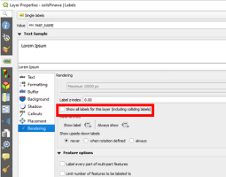
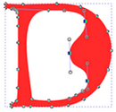

Inkscape:
Tips for creating map layouts
Meg Miller - GIS & Data Visualization Librarian
workshop: bit.ly/ink_w2022
Outline
- Become familiar with popular graphics software and what is supported through the University;
- Discuss QGIS Export Strategies
- Inkscape Exercise:
- The basics
- Edit a complex layout
Software Access:
Data Visualization LibGuide
Don't forget about training resources!
Upcoming Fall/ Winter Sessions
January 19th:Open Data: Manitoba Crop InventoryFebruary 16th:Introduction to data cleaning with OpenRefine & word cloudsFebruary 23rd:QGIS 1: A Gentle Introduction to Open Source GIS SoftwareMarch 2nd:Infographics: An IntroductionMarch 9th:PowerBI 1: A Gentle Introduction to Data DashboardsMarch 16th:Data Visualization: the Good, the Bad and the Ugly- April 6th: Network Visualization using VosViewer - An Introduction
(Wednesdays at noon)
Open Software workflow:
- Visualize + Contextualize: Google Earth, OSM...
- Perform Analysis: QGIS, GRASS...
- Visualize & Share: Inkscape, GIMP, Leaflet, mapbox.js...
Considerations when exporting from QGIS
- Labels
- Surround elements (scalebar, north arrow etc.)
- File formats
Exporting: Labels
- Show all labels, even conflicting 
- Decide if you want to convert text to path 
Exporting: Surround elements
- Scale bar not scale text
- Legends
- North arrow
Exporting: File Formats
SVG
Today's Session:
Inkscape- Tips for creating map layouts

Questions
meg.miller@umanitoba.ca
workshop: bit.ly/ink_w2022